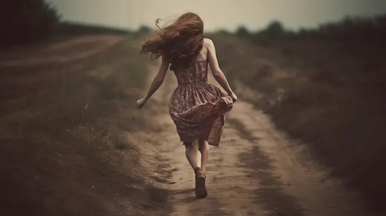

Every girl at least once in her life time will end up meeting someone she truley feels like she can finally give whole or at least half of her heart to. There was a girl who was raised on a farm but she also loved to be a free spirit and run all around the fields and enjoy her life. So one day she ended up running away. She only ran away because she was in love and her parents never wanted her to marry this man so she changed her whole identity. Her family really missed her smile and everything she used to do on the fields. But sadly, they never got to find her. And she started her new life with her husband and builded a family of her own.
What would be the best decision to make?
